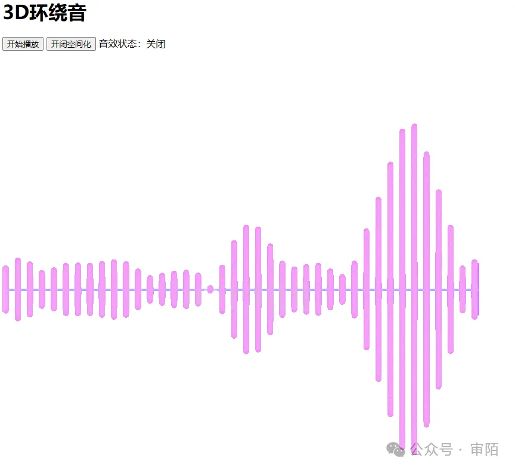

3D环绕音

完整代码：
<!DOCTYPE html>
<html lang="en">
<head>
<meta charset="UTF-8" />
<meta http-equiv="X-UA-Compatible" content="IE=edge" />
<meta name="viewport" content="width=device-width, initial-scale=1.0" />
<title>Web Audio</title>
</head>
<body>
<h1>3D环绕音</h1>
<audio
loop
autoplay
crossorigin="anonymous"
src="https://s3-us-west-2.amazonaws.com/s.cdpn.io/858/outfoxing.mp3"
></audio>
<button onclick="startPlay()">开始播放</button>
<button onclick="spatialize()">开闭空间化</button>
<span>音效状态：</span><span id="status">关闭</span><br />
<img
src="https://wimg.588ku.com/gif/21/07/30/7d40c30d2c5de73bcde94f3bfc8f5a89.gif"
alt=""
style="display: none;"
/>
<script>
// 音源初始位置信息
const audioPosition = [0, 0, 1];
// 创建音频上下文
const AudioContext = window.AudioContext || window.webkitAudioContext;
const audioCtx = new AudioContext();
// 设置 AudioListener
const listener = audioCtx.listener;
listener.positionX.value = 0;
listener.positionY.value = 0;
listener.positionZ.value = 0;
listener.forwardX.value = 0;
listener.forwardY.value = 0;
listener.forwardZ.value = -1;
// 创建输入结点，解码 audio 标签的音频源；创建处理结点，处理音频
const audioEl = document.querySelector("audio");
const sourceNode = audioCtx.createMediaElementSource(audioEl);
// 创建和设置 PannerNode
const pannerNode = new PannerNode(audioCtx, {
panningModel: "HRTF", // 音频空间化算法模型
distanceModel: "linear", // 远离时的音量衰减算法
rolloffFactor: 1, // 衰减速度
coneInnerAngle: 360, // 声音 360 度扩散
positionX: audioPosition[0],
positionY: audioPosition[1],
positionZ: audioPosition[2],
maxDistance: 10000,
});
// 将输入节点直接连接到输出节点
sourceNode.connect(audioCtx.destination);
// 设置音源自动分别沿 xyz 三个轴来回移动效果，形成环绕效果
function autoMove(axis, interval, step = 100, maxDistance = 1000) {
let isAdd = true;
const positionAxisMap = ["positionX", "positionY", "positionZ"];
setInterval(() => {
if (isAdd && audioPosition[axis] >= maxDistance) {
isAdd = false;
} else if (!isAdd && audioPosition[axis] <= -maxDistance) {
isAdd = true;
}
if (isAdd) {
audioPosition[axis] += step;
} else {
audioPosition[axis] -= step;
}
pannerNode[positionAxisMap[axis]].value = audioPosition[axis];
console.log("audioPosition", audioPosition);
}, interval);
}
// 沿 x 轴在 -1000 到 1000 之间来回移动
autoMove(0, 100, 100, 1000);
// 沿 z 轴在 -1000 到 1000 之间来回移动
autoMove(2, 200, 100, 1000);
// 沿 y 轴在 -100 到 100 之间来回移动
autoMove(1, 400, 10, 100);
// 开始播放音乐
function startPlay() {
audioCtx.resume();
// 设置静音播放。
audioEl.play();
document.querySelector("img").style.display = "block";
}
// 开关 3D 音效
let isSpatialized = false;
function spatialize() {
isSpatialized = !isSpatialized;
document.querySelector("#status").innerText = isSpatialized
? "开启"
: "关闭";
if (isSpatialized) {
sourceNode.disconnect();
sourceNode.connect(pannerNode);
// 将处理节点连接到 destination 输出节点进行效果输出。
pannerNode.connect(audioCtx.destination);
} else {
sourceNode.disconnect();
sourceNode.connect(audioCtx.destination);
}
}
</script>
</body>
</html>